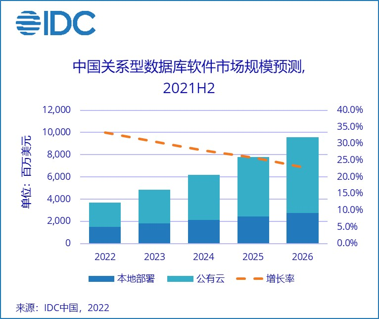
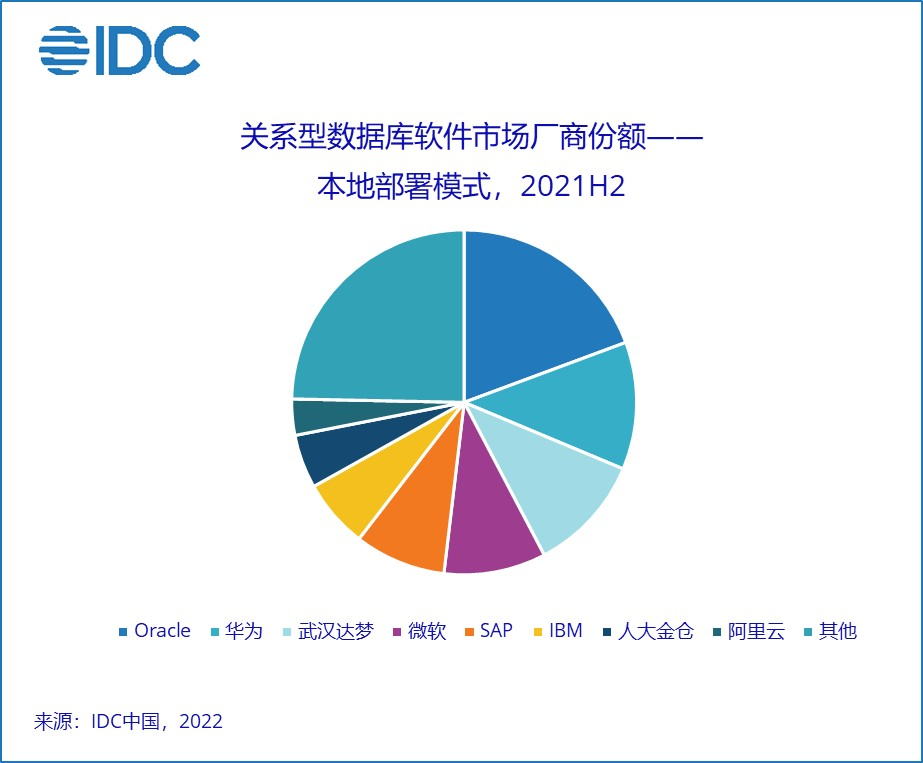
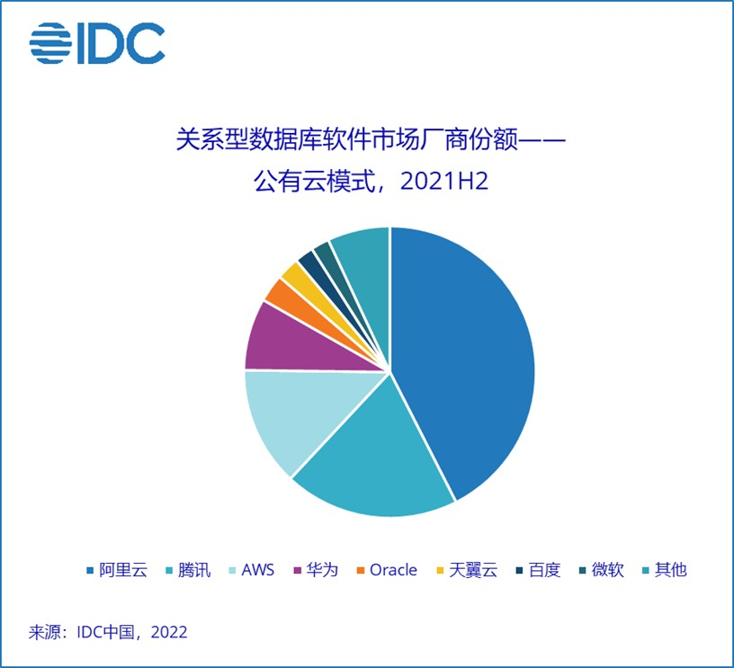

IDC：到2026年中国关系型数据库软件市场规模将达95.5亿美元 未来5年CAGR为28.1%
7月4日，根据IDC《2021年下半年中国关系型数据库软件市场跟踪报告》显示，2021下半年中国关系型数据库软件市场规模为15.8亿美元，同比增长34.9%。
智通财经APP获悉，7月4日，根据IDC《2021年下半年中国关系型数据库软件市场跟踪报告》显示，2021下半年中国关系型数据库软件市场规模为15.8亿美元，同比增长34.9%。其中，公有云关系型数据库规模8.7亿美元，同比增长48.7%;本地部署关系型数据库规模7.1亿美元，同比增长21.1%。IDC预测， 到2026年，中国关系型数据库软件市场规模将达到95.5亿美元，未来5年市场年复合增长率(CAGR)为28.1%。

随着云计算、大数据、人工智能以及5G等新技术的不断出现，数据环境呈现出大规模、高增长、多样化和分布化等特征，而随着企业数字化转型的深入，企业对数据的管理和使用也有了更高的智能化和自动化需求。关系型数据库正向着分布式、云原生、AI使能、HTAP(混合事务与分析型数据库)、多模等方向发展。
数据库技术的发展创造了更广泛的市场空间，也催生了更多的数据库供应商类型，当前中国关系型数据库市场中活跃的供应商可分为国际厂商、本土传统数据库厂商、新兴厂商、云厂商、开源厂商、数据库服务商等多种类型，甚至行业头部最终用户也已经通过自研与联创进入市场，中国关系型数据库市场呈现出空前的繁荣。
2021下半年中国关系型数据库软件市场中，本地部署模式和公有云模式的厂商表现如下：
在本地部署模式市场中，由于利好政策的驱动，本土厂商市场份额都得到迅速扩大，如：在政府行业，武汉达梦、人大金仓在过去一年中获得了大量的订单;华为在政企、金融行业也获得了突破。总体上看，本土厂商的份额正在快速追赶上Oracle、IBM等国际厂商。

公有云关系型数据库市场的格局比中国公有云总体市场的集中度更高，前五名厂商占据了86.3%的市场份额。

IDC中国企业软件市场研究经理王楠表示：“在新兴数据库技术层面，中国本土数据库厂商与国际厂商的差距不大，部分领域还处于领先地位，产品性价比更有优势。在宏观层面，政策极大利好本土厂商，本土厂商的市场机会将会高于国际厂商。在数据库技术发展和宏观政策驱动的双重因素影响下，中国关系型数据库市场过去的格局正在被打破，变革即将到来。”